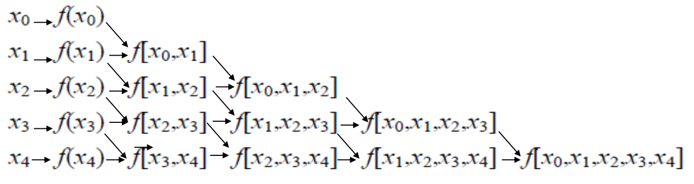
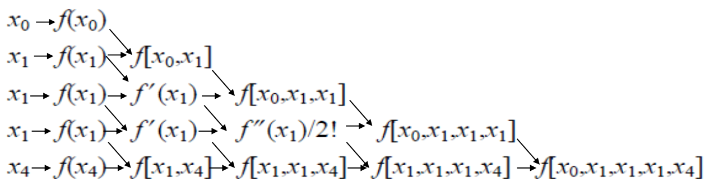
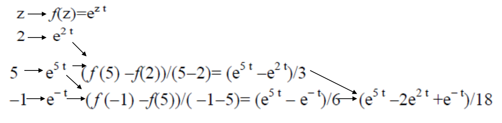

[矩阵论]3.2矩阵函数
\[ \newcommand\norm[1]{\Vert#1\Vert} \]
矩阵函数的概念
定义：设一元函数 \(f(z)\) 能展开为 \(z\) 的幂级数： \[ f(z)=\sum_{k=0}^\infty c_kz^k,\quad |z|<r \] 则当 \(n\) 阶方阵 \(A\) 满足 \(\rho(A)<r\) 时，矩阵级数 \(\sum_{k=0}^\infty c_kA^k\) 收敛，其和称为矩阵函数，记作： \[ f(A)=\sum_{k=0}^\infty c_k A^k \] 代入规则：若 \(f(z)\) 能展开为 \(z\) 的幂级数且 \(f(z)=g(z)\) 对 \(|z|<r\) 成立，则当 \(\rho(A)<r\) 时，\(f(A)=g(A)\).
二元函数的代入规则：若 \(f(x,y)\) 能展开为 \(x,y\) 的幂级数且 \(f(x,y)=g(x,y)\). 若 \(AB=BA\)，则 \(f(A,B)=g(A,B)\).
为什么要求 \(AB=BA\)？因为 \(f(x,y)=\sum_{i=0}^\infty\sum_{j=0}^\infty c_{ij}x^iy^j\)，中间项要求交换律才能合并。
举例： \[ \begin{align} &\sin(A)=A-\frac{A^3}{3!}+\frac{A^5}{5!}-\cdots\\ &\cos(A)=I-\frac{A^2}{2!}+\frac{A^4}{4!}-\cdots\\ &e^A=I+A+\frac{A^2}{2!}+\frac{A^3}{3!}+\cdots \end{align} \]
矩阵函数的求法
待定系数法
给定 \(A\)，确定首一零化多项式 \(g(\lambda)\)，使得 \(g(A)=0\)，例如特征多项式或最小多项式均可。设 \[ f(\lambda)=g(\lambda)q(\lambda)+r(\lambda) \] 其中 \(\deg r(\lambda)<\deg g(\lambda)\). 那么只要确定了 \(r(\lambda)\)，就有 \(f(A)=r(A)\).
所以问题的关键在于如何确定 \(r(\lambda)\). 我们并不需要解 \(q(\lambda)\)，只需要找 \(\deg r(\lambda)\) 个函数值或导数值（\(k\) 重根就求 \(k-1\) 阶导）形成线性方程组，就能解系数方程（其实就是带有导数约束的插值问题）。具体而言，设 \(g(\lambda)\) 的互异零点为 \(\lambda_1,\ldots,\lambda_s\)，对应重数为 \(r_1,\ldots,r_s\)，那么易知： \[ g^{(l)}(\lambda_i)=0,\quad l=0,\ldots,r_i-1;\,i=1,\ldots,s \] 因此： \[ r^{(l)}(\lambda_i)=f^{(l)}(\lambda_i),\quad l=0,\ldots,r_i-1;\,i=1,\ldots,s\label{prob}\tag{1} \] 解该方程组即可确定 \(r(\lambda)\).
方法 0. 直接求解
对于规模较小的问题，直接求解方程组 \(\eqref{prob}\) 式即可。
例：设 \(A=\begin{bmatrix}2&0&0\\1&1&1\\1&-1&3\end{bmatrix}\)，求 \(e^A\).
解：特征方程为： \[\varphi(\lambda)=\begin{vmatrix}\lambda-2&0&0\\-1&\lambda-1&-1\\-1&1&\lambda-3\end{vmatrix}=(\lambda-2)^3\] 设 \(f(\lambda)=e^\lambda=\varphi(\lambda)q(\lambda)+r(\lambda)\)，其中 \(r(\lambda)=a\lambda^2+b\lambda+c\)，则： \[\begin{cases}r(2)=f(2)=e^2\\r'(2)=f'(2)=e^2\\r''(2)=f''(2)=e^2\end{cases}\implies\begin{cases}4a+2b+c=e^2\\4a+b=e^2\\2a=e^2\end{cases}\implies\begin{cases}a=e^2/2\\b=-e^2\\c=e^2\end{cases}\] 故 \(r(\lambda)=e^2/2\cdot(\lambda^2-2\lambda+2)\)，故： \[f(A)=r(A)=\frac{e^2}{2}(A^2-2A+2I)=\begin{bmatrix}\cdots\end{bmatrix}\]
方法 1. Sylvester 插值公式
暂略。
方法2. 广义 Newton 插值公式
思想：正如上文所说，解方程组 \(\eqref{prob}\) 本质就是解带有导数约束的插值问题。我们知道 Taylor 展开式满足在一个点处的 \(n\) 阶导数值相等，而 Newton 展开式满足在多个点处的函数值相等，所以我们想解决的插值问题其实是二者的结合，遂称作广义 Newton 插值。
Taylor 展开式：若已知 \(f(x)\) 在 \(x_0\) 的函数值和直到 \(n\) 阶导数值，则： \[ Tf(x)=f(x_0)+f'(x_0)(x-x_0)+\frac{f''(x_0)}{2!}(x-x_0)^2+\cdots+\frac{f^{(n)}(x_0)}{n!}(x-x_0)^n \] 使得 \(Tf^{(l)}(x_0)=f^{(l)}(x_0),\,l=0,\ldots,n\) 成立。
Newton 展开式：若已知 \(f(x)\) 在互异点 \(x_0,x_1,\ldots,x_n\) 处的函数值，则有 Newton 插值公式： \[ \begin{align} Nf(x)&=f(x_0)\\ &+f[x_0,x_1](x-x_0)\\ &+f[x_0,x_1,x_2](x-x_0)(x-x_1)\\ &+\cdots\\ &+f[x_0,x_1,\ldots,x_n](x-x_0)(x-x_1)\cdots(x-x_{n-1}) \end{align} \] 使得 \(Nf(x_i)=f(x_i),\,i=0,\ldots,n\) 成立。
其中 \(f[x_0,x_1]\) 称作一阶均差： \[ f[x_0,x_1]=\frac{f(x_1)-f(x_0)}{x_1-x_0} \] \(f[x_0,x_1,x_2]\) 称作二阶均差： \[ f[x_0,x_1,x_2]=\frac{f[x_1,x_2]-f[x_0,x_1]}{x_2-x_0} \] \(f[x_0,x_1,\ldots,x_k]\) 称作 \(k\) 阶均差： \[ f[x_0,x_1,\ldots,x_k]=\frac{f[x_1,\ldots,x_{k-1},x_k]-f[x_0,x_1,\ldots,x_{k-1}]}{x_k-x_0} \] 可以借助下面这个三角形表格来计算均差：

广义 Newton 展开式
从均差的定义可以看出，它的极限与导数有密切关系。事实上，利用罗尔定理可以证明：若 \(f(x)\) 在 \([a,b]\) 上存在 \(n\) 阶导数，且节点 \(x_0,x_1,\ldots,x_n\in[a,b]\)，则存在 \(\xi\in[a,b]\) 使得： \[ f([x_0,x_1,\ldots,x_n])=\frac{f^{(n)}(\xi)}{n!} \] 因此，我们可以定义在相同点处的“广义”均差为： \[ f([c,c,\ldots,c])=\frac{f^{(n)}(c)}{n!} \] 那么，Taylor 展开就可以看作是广义 Newton 展开在插值节点重合的特殊情形。
广义的均差也可以借助均差表计算，例如：

例：设 \(A=\begin{bmatrix}2&0&0\\1&1&2\\1&-1&3\end{bmatrix}\)，求 \(e^{At}\).
解：特征方程为： \[\varphi(\lambda)=\begin{vmatrix}\lambda-2&0&0\\-1&\lambda-1&-2\\-1&1&\lambda-3\end{vmatrix}=(\lambda-2)(\lambda-5)(\lambda+1)\] 画均差表：

于是： \[r(\lambda)=e^{2t}+\frac{e^{5t}-e^{2t}}{3}(\lambda-2)+\frac{e^{5t}-2e^{2t}+e^{-t}}{18}(\lambda-2)(\lambda-5)\] 故： \[e^{At}=r(A)=\cdots\]
数项级数求和法
暂略。
对角形法
对角化的计算量较大（要计算 \(P\) 和 \(P^{-1}\)，即解特征值和特征向量）
若 \(A\) 可对角化，即存在非奇异矩阵 \(P\)，使得： \[ P^{-1}AP=\begin{bmatrix}\lambda_1&&\\&\ddots&\\&&\lambda_n\end{bmatrix} \] 则： \[ f(A)=P\begin{bmatrix}f(\lambda_1)&&\\&\ddots&\\&&f(\lambda_n)\end{bmatrix}P^{-1} \]
Jordan 标准形法
在第一章中我们已经推导过了 Jordan 标准形的多项式，而对于一般函数，根据代入规则容易知道其结论有类似的形式。
设 \(A\) 的 Jordan 标准形为 \(J\)，则存在可逆矩阵 \(P\) 使得： \[ P^{-1}AP=J=\begin{bmatrix}J_1&&\\&\ddots&\\&&J_s\end{bmatrix},\quad J_i=\begin{bmatrix}\lambda_i&1&&\\&\ddots&\ddots&\\&&\lambda_i&1\\&&&\lambda_i\end{bmatrix}_{m_i\times m_i} \] 那么： \[ f(J_i)=\begin{bmatrix} f(\lambda_i)&\frac{1}{1!}f'(\lambda_i)&\frac{1}{2!}f''(\lambda_i)&\cdots&\frac{1}{(m_i-1)!}f^{(m_i-1)}(\lambda_i)\\ &f(\lambda_i)&\frac{1}{1!}f'(\lambda_i)&\cdots&\frac{1}{(m_i-2)!}f^{(m_i-2)}(\lambda_i)\\ &&\ddots&\ddots&\vdots\\ &&&f(\lambda_i)&\frac{1}{1!}f'(\lambda_i)\\ &&&&f(\lambda_i) \end{bmatrix}_{m_i\times m_i} \] 于是原问题： \[ f(A)=Pf(J)P^{-1}=P\begin{bmatrix}f(J_1)&&\\&\ddots&\\&&f(J_s)\end{bmatrix}P^{-1} \]